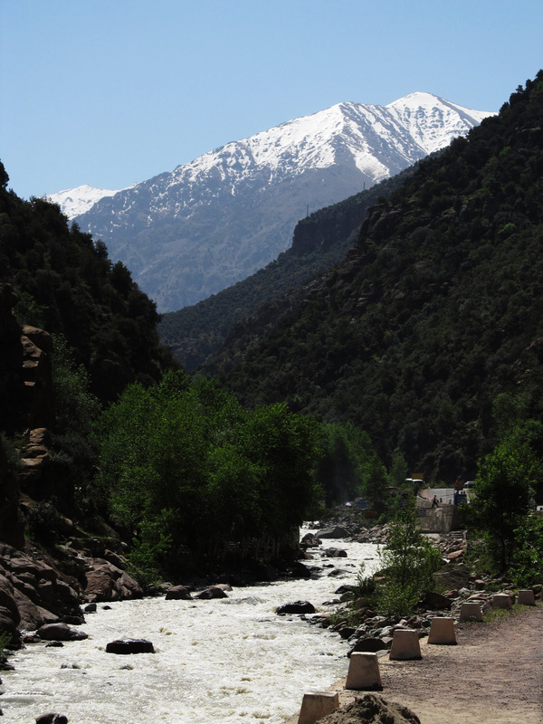
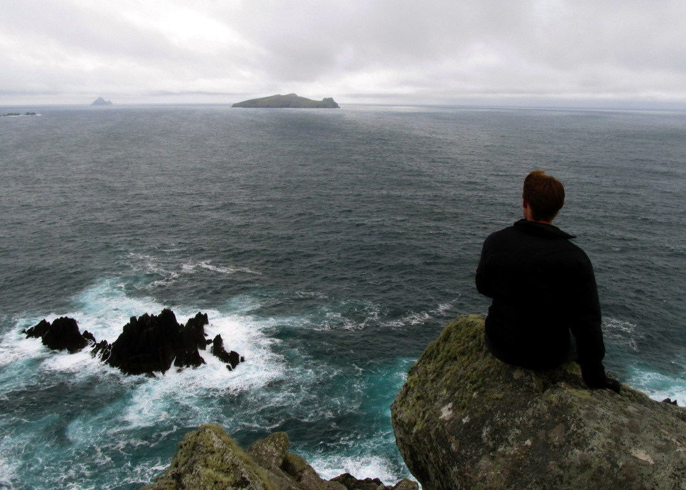

Resources for visitors
My FAQ about my experience at the University of Birmingham in the spring of 2011.
My journal of my travels during the Easter break of that semester.
My FAQ about my experience at the University of Birmingham in the spring of 2011.
My journal of my travels during the Easter break of that semester.
|
_Philosophy on Studying Abroad
Studying abroad opens up a world of opportunities for students, both literally and figuratively. Living in the United States, and particularly the Midwest, students have relatively little interaction with foreign cultures or concepts. I believe that this interaction is essential to challenging the predispositions and misconceptions held by many (if not most) students. From personal experience abroad, we take even simple things like mannerisms as fact instead of local preference. Scaling these differences to larger issues can cause major upsets if people do not pay the proper respect toward foreign customs and ideals. With cultural cooperation and coexistence as specific examples, I believe that personally experiencing these differences opens the mind to a more positive and beneficial way of thinking and analyzing the world. This fosters stronger connections in the classroom, workplace, and community, especially with the ever-expanding diversity in academic and technical disciplines. I believe that the objective benefit of a more accepting world view gained from studying abroad is even more important than the substantial tangible benefits a globally cultured perspective will afford students.

The Atlas mountain range near Marrakesh, Morocco.
|

On the Dingle Peninsula, Ireland.
_My Experiences
I was very fortunate to have the opportunity to study abroad for a semester at the University of Birmingham in England during the Spring of 2011. During my time there I backpacked through much of western Europe and even spent two days in Morocco. My experiences during this semester challenged my convictions about culture, social interactions, world view, and education. I developed a lot personally as a result of these thought-provoking months, in addition to enhancing my education. I took classes in computer networking, microprocessor programming in assembly, data mining/information retrieval, philosophy of cognitive science, and electroacoustic music (for an overview of my music technology background, see the related entries on my Projects page). The English philosophy on education afforded me an opportunity to develop my skills as an independent learner, and the distinct differences between English and American education systems provided challenges that caused me to take ownership of my own education. Many parts of my study abroad experience were not easy, but I worked hard to ensure that I was prepared for my adventure and maximized every moment of it. I learned a lot about trip planning, navigating foreign places, and communicating across language barriers. I returned home to Iowa with a wealth of information that I did not want to go to waste. I have put many hours into developing resources for other students interested in studying abroad at the University of Birmingham or elsewhere. I wrote an extensive FAQ about my experiences, including a breakdown of what to expect for budgeting, delineation of the (rather confusing) class registration process, discussion of housing options, and thoughts and ideas on traveling to other countries while in Europe. I also present at study abroad fairs, and work personally with students interested in studying at the University of Birmingham. A full journal of my Easter break travels through several countries is also hosted here. |
Map of places I have traveled
View Places I've Been Abroad in a larger map